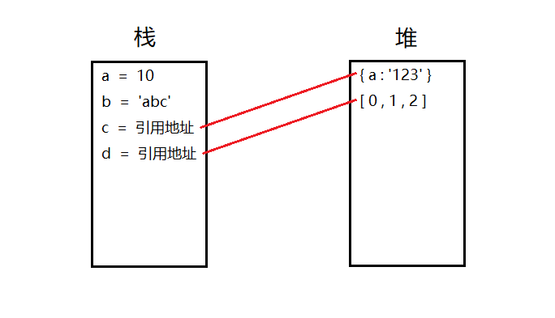

本文在个人主页同步更新~
介绍：一些知识点相关的面试题和答案
使用姿势：看答案前先尝试回答，看完后把答案收起来检验成果~
typeof(null)得到的是 Object类型；undefined则是一个空值，通过typeof(undefined)得到的是 Undefined。
介绍：总结性的图表或笔试题目和解析，让知识点更容易懂
如下图所示，a,b变量是值类型，c,d变量是引用类型。
在声明c,d变量时，会先创建相应的对象存放在堆内存中，再将其引用地址赋值给变量。

由此，这道常见面试题的答案显而易见
var a = { test : 10 }
var b = a
a.test = 20
此时b.test=?| 描述 | 数据类型 | 强转Boolean值 | |
|---|---|---|---|
| null | 指针，指向地址没有对象 | Object | false |
| {} | 指针，指向空对象 | Object | true |
| undefined | 值，未定义 | Undefined | false |
日常大部分的拷贝动作都属于浅拷贝，包括直接赋值(=), 扩展运算符(...), Array的concat操作, Object的assign操作。
真正的深拷贝方法可以自己进行封装，循环判断每一个子项是否为引用类型，再进行复制。
也可以通过JSON.parse(JSON.stringfy(object))进行深拷贝
// 日常所见的浅拷贝操作
var a = { class: 1, teacher: { name : 'abc' }}
var b = a
var c = {...a}
var d = Object.assign({}, a)
var e = JSON.parse(JSON.stringify(a))
a.class = 2
a.teacher.name = 'bcd'
console.log(a) // 打印结果：{ class: 2, teacher: { name : 'bcd' }}
console.log(b) // 打印结果：{ class: 2, teacher: { name : 'bcd' }}
console.log(c) // 打印结果：{ class: 1, teacher: { name : 'bcd' }}
console.log(d) // 打印结果：{ class: 1, teacher: { name : 'bcd' }}
console.log(e) // 打印结果：{ class: 1, teacher: { name : 'abc' }}通过以上代码可以看出..., Object.assign, concat等操作只是第一层用新建的对象包裹住，子属性对象的引用地址还是和原来一致。
Kane -- 一切都是命运石之门的选择